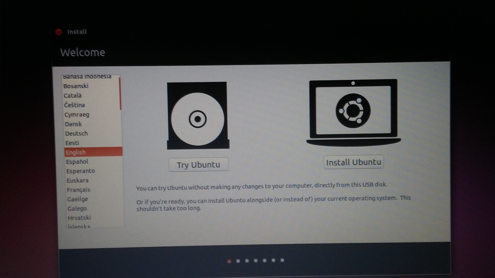
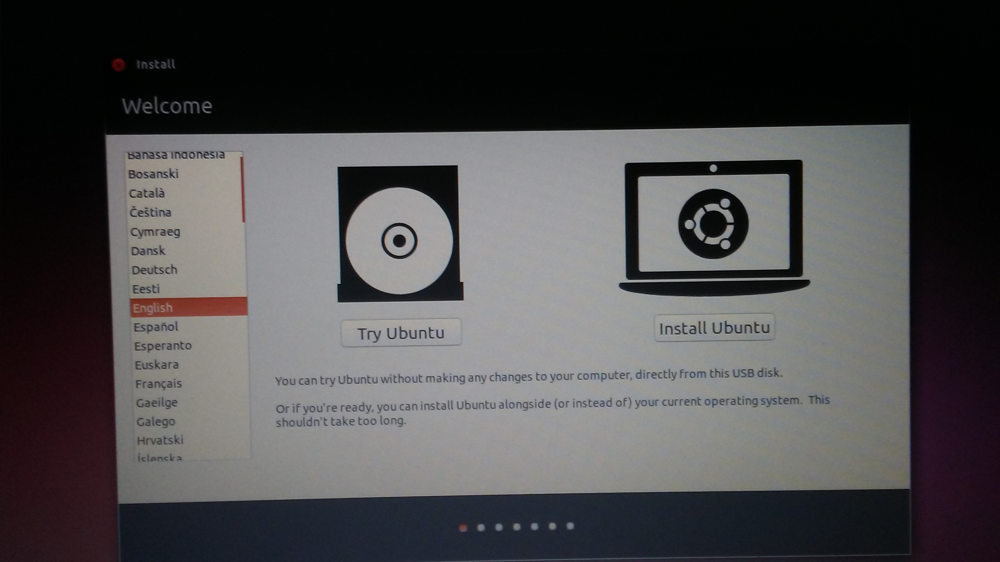

… whereas booting with the USB flash drive created using USB Creator my only options were to either test or install Ubuntu:

In the past I had used the UNetbootin utility with good results (as described here)
In November 2016 I also used the USB Creator application (which can be
launched from the command line with usb-creator-gtk).
Even though both approaches work, I found the UNetbootin option to work better
in my Lenovo ThinkPad T420 as when booting from the live USB flash drive
(in T420 by using F1 you enter the BIOS or by using F12
you enter directly the boot menu screen that allows you to select from which
device to boot) made with UNetbootin I was presented with an additional
option that allowed
me to perform a memory test:
… whereas booting with the USB flash drive created
using USB Creator my only options were to either test or install Ubuntu:

Related to the above travail see SO answer of mine where I describe this discrepancy and where another member comments in that this has to do with UEFI (though I am not convinced).
{kind=link}